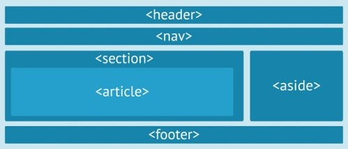
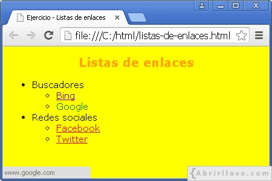

Los estudiantes deberan comprender mediante el uso de herramientas diversos componente que le permitan realizar etiquetas semánticas, Listas y enlaces mediante diseños de sitios web practicos,esta actividad esta mas relacionada a estudiantes de ingenierias que tienen una capacidad mas logica para pogramar, auque cualquier alumno estara en la capacidad de poder realizar este tipo de actividades
Es parte fundamental para la estructura de un documento ya que permite que las páginas web sean mejor indexadas para los buscadores.Ref:Arume Informatico. (2012). HTML5: Nuevas etiquetas semánticas y estructurales. 2021, de Arume Sitio web: https://www.arumeinformatica.es/blog/html5-nuevas-etiquetas-semanticas-y-estructurales/
Se deben hacer bien ya que de lo contrario, pueden causar problemas graves a los usuarios que quiera utilizar el sitio web, los enlaces tienen algunos requisitos básicos en cuanto al estilo y a las expectativas, los enlaces con estilos mal elaborados pueden arruinar la experiencia que tendrá el usuario cuando utilice la web ya que no sabrá determinar qué elementos de la página son enlaces. Ref:UOC. (2017). Estilos de listas y enlaces. 2021, de UOC Sitio web: https://mosaic.uoc.edu/ac/le/es/m6/ud6/index.html
